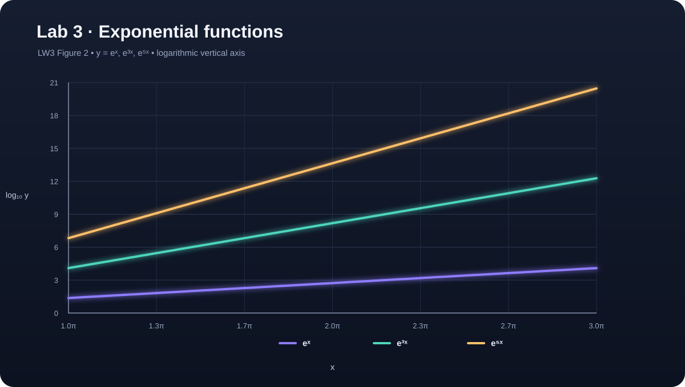
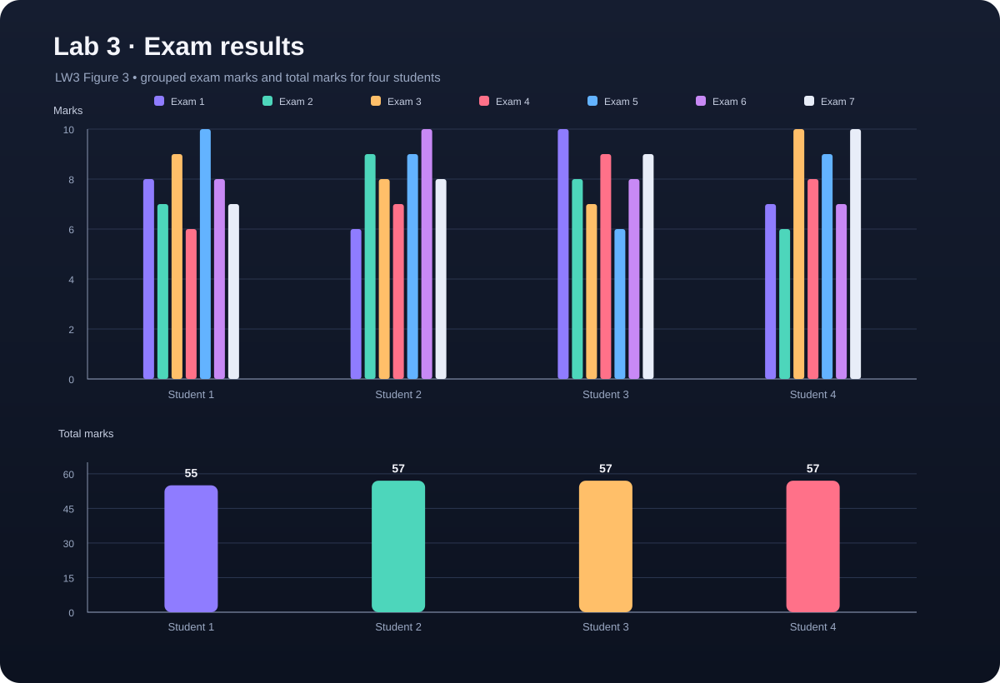
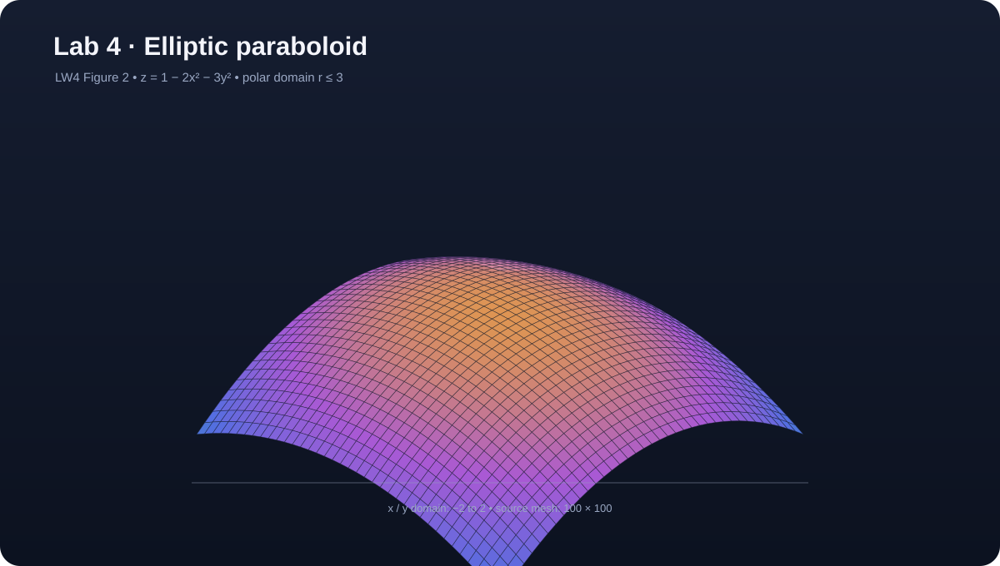
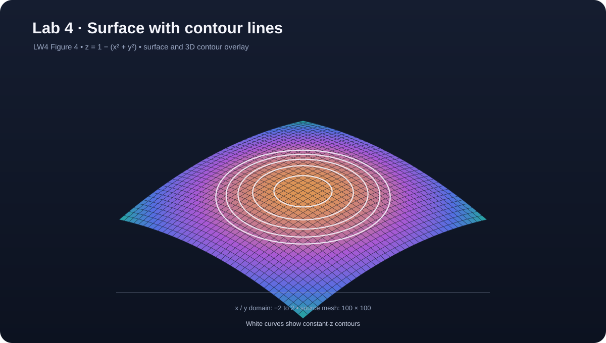

Application development
Clear interfaces and dependable app foundations.

Creative technology · Interactive systems · Applied AI
App & Game Developer AI Engineer
I turn ideas into useful apps, playful worlds, and thoughtful AI tools.
Building across applications, games, and intelligent systems.
I enjoy taking a concept from a rough sketch to a working experience. My interests sit at the intersection of app development, game systems, and applied AI, where good engineering can make ambitious ideas feel clear and enjoyable to use.
I like small, iterative builds: make the core loop work, learn from each prototype, and refine the details that make an experience feel complete. Outside the code, I follow game design, digital art, and the ways people interact with new technology.
A practical toolkit for shaping ideas into reliable, interactive software.
Clear interfaces and dependable app foundations.
Interactive mechanics, game loops, and playable prototypes.
Useful model integrations grounded in real tasks.
A fictional practice profile showing a path through software, interactive development, and applied AI.
Vilnius Tech · Fictional practice entry
Coursework in algorithms, object-oriented programming, databases, interface design, and collaborative software projects.
Independent learning pathway · Fictional
Focused study in model integration, data preparation, prototyping, and evaluation of user-facing AI features.
Independent project studio · Fictional
Student innovation lab · Fictional
Four vector graphs recreated from the formulas and data in Lab Works 3 and 4. The exponential chart uses a logarithmic y-axis so all three curves remain readable.
Lab Work 3 · Figure 2

Lab Work 3 · Figure 3

Lab Work 4 · Figure 2

Lab Work 4 · Figure 4

Example service packages and sample prices for this fictional practice CV.
| Service | Description | Price |
|---|---|---|
| App prototype | Responsive interface and a focused core workflow. | From €450 |
| Gameplay prototype | One playable mechanic with a short feedback loop. | From €600 |
| AI feature integration | Small model-powered feature with a test plan. | From €500 |
I keep scope visible, share progress early, and use feedback to make each iteration more useful and easier to use.
Prices and experience details are illustrative, not a real commercial offer.
Local media files and a YouTube embed, included for the LW8 assignment.
Video by Mikhail Nilov on Pexels.
Embedded from YouTube as specified in the assignment.
A one-minute ticking sample, included as an optional local audio player.
Sound by spinopel on Pixabay · Pixabay Content License.